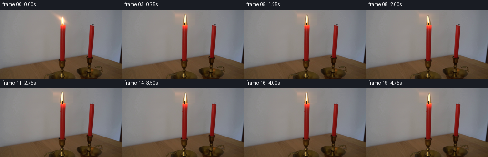
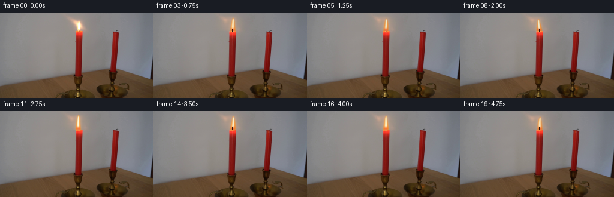
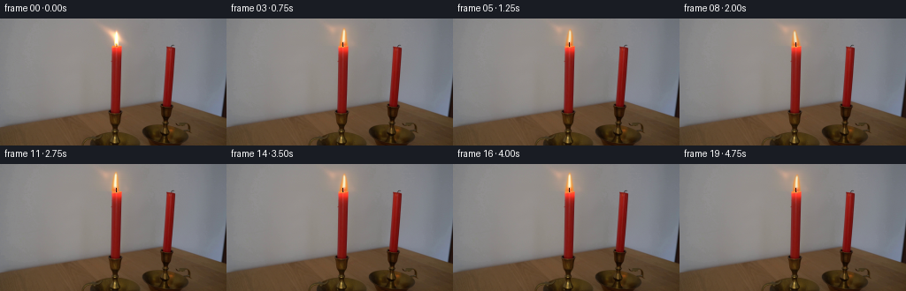
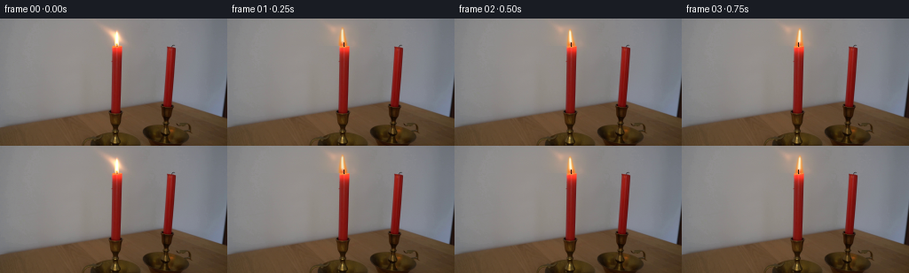
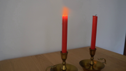
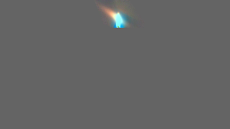
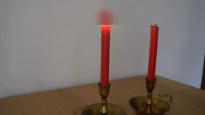
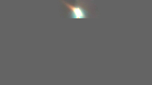
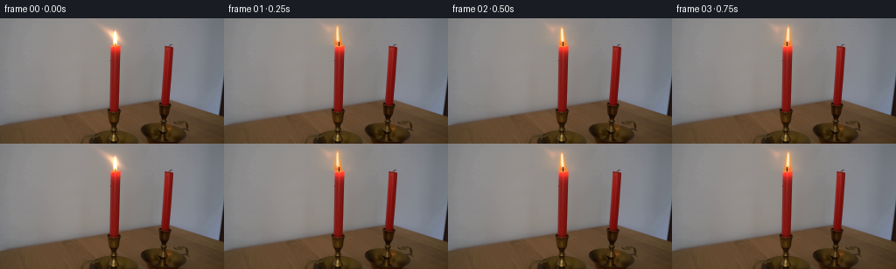
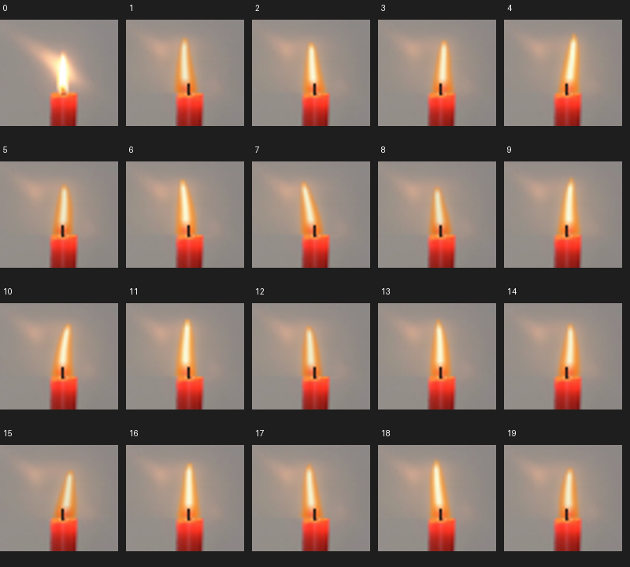

CODING AGENTS AS PIXEL WORLD MODELS
traex/GPT-5.6-Sol · 0091
点击播放 · 原生 RGB 像素
逐轮保存的候选
回放视频、检查图与代码变化。
每份候选均可单独播放。实际图片检查记录在下方工具轨迹中。
候选 01播放与检查图
点击播放 · 原生 RGB 像素

展开代码变化
--- 上一保存版本
+++ 本次保存版本
@@ -0,0 +1,112 @@
+from pathlib import Path
+import numpy as np
+import cv2
+from PIL import Image
+import artifact_io
+
+# Deterministic, image-based candle-flame animation. The camera and all solid
+# objects stay untouched; only the small luminous flame region is synthesized.
+CASE_DIR = Path(__file__).resolve().parent
+SRC = np.asarray(Image.open(CASE_DIR / "first_frame.png").convert("RGB"), dtype=np.uint8)
+H, W = SRC.shape[:2]
+
+
+def flame_mask_and_rgb(frame_index):
+ """Return premultiplied-looking flame/glow RGB plus a soft alpha mask."""
+ # Carefully hand-tuned flicker trajectory at 4 fps. Values are modest so
+ # consecutive images read as real-time flame motion, rather than a cut.
+ dx = np.array([0, -1, 0, 1, 1, 0, -1, -1, 0, 1, 0, -1, -1, 0, 1, 1, 0, -1, 0, 1], float)[frame_index]
+ lean = np.array([0, -1, -2, 0, 2, 1, -1, -3, -1, 1, 2, 0, -2, -1, 1, 3, 1, -1, -2, 0], float)[frame_index]
+ ht = np.array([0, 1, -1, 0, 2, -1, 1, 0, -2, 1, 0, 2, -1, 1, 0, -2, 1, 0, 2, -1], float)[frame_index]
+ pulse = np.array([1.00,.96,1.03,.99,1.06,.95,1.02,.98,.94,1.04,1.00,1.05,.96,1.02,.99,.93,1.04,.98,1.03,.97])[frame_index]
+
+ yy, xx = np.mgrid[0:H, 0:W].astype(np.float32)
+ base_x, base_y = 131.0 + dx, 30.0
+ tip_y = 8.3 - ht
+ length = base_y - tip_y
+ # Normalized vertical coordinate, base=0 and tip=1.
+ t = np.clip((base_y - yy) / length, 0, 1)
+ center = base_x + lean * (t ** 1.25) - 0.6*np.sin(np.pi*t + frame_index*.72)*t
+ # Teardrop outline: broad lower body, tapering to an irregular point.
+ halfw = (5.6*(1-t)**0.55 + 0.3) * (0.94 + .05*np.sin(frame_index*.9 + t*5))
+ dist = np.abs(xx-center) / halfw
+ vertical_ok = (yy <= base_y+0.6) & (yy >= tip_y-0.7)
+ shape = np.clip(1.0-dist, 0, 1) * vertical_ok
+ alpha = np.clip(shape*2.2, 0, 1)
+ alpha = cv2.GaussianBlur(alpha, (0,0), .60)
+
+ # White-hot center, yellow mantle, amber/red base.
+ core_center = center - .12
+ core_w = 1.35 + 1.0*(1-t)
+ core = np.exp(-((xx-core_center)/core_w)**2) * np.clip((t-.06)/.2,0,1) * np.clip((1.03-t)/.18,0,1)
+ yellow = np.clip(shape*1.45,0,1)
+ lower = np.exp(-((yy-28.5)/3.0)**2) * np.exp(-((xx-base_x)/3.3)**2)
+ blue = np.exp(-((yy-29.0)/1.8)**2) * np.exp(-((xx-base_x)/2.1)**2)
+
+ rgb = np.zeros((H,W,3), np.float32)
+ rgb[...,0] = 245*yellow + 18*core + 30*lower
+ rgb[...,1] = 136*yellow + 112*core + 14*lower + 20*blue
+ rgb[...,2] = 28*yellow + 180*core + 48*blue
+ # Additional white core raises all channels together.
+ rgb += core[...,None] * np.array([55,85,72],np.float32)
+ rgb *= pulse
+ return alpha[...,None].astype(np.float32), np.clip(rgb,0,255)
+
+
+def make_frame(i):
+ if i == 0:
+ return SRC.copy()
+ out = SRC.astype(np.float32).copy()
+ yy, xx = np.mgrid[0:H,0:W].astype(np.float32)
+
+ # Remove only the original flame pixels using a local wall estimate. The
+ # scene itself remains locked-off and pixel-stable outside this tiny area.
+ # Linear interpolation between clean wall samples at x=116 and x=147.
+ x0,x1 = 116,147
+ wall0 = SRC[:,x0].astype(np.float32)
+ wall1 = SRC[:,x1].astype(np.float32)
+ for x in range(112,153):
+ a = np.clip((x-x0)/(x1-x0),0,1)
+ out[:31,x] = wall0[:31]*(1-a) + wall1[:31]*a
+
+ alpha, fire = flame_mask_and_rgb(i)
+
+ # Warm, broad illumination on the nearby wall. It breathes subtly and
+ # leans with the flame, with very low opacity to preserve source texture.
+ dxs = np.array([0,-1,0,1,1,0,-1,-1,0,1,0,-1,-1,0,1,1,0,-1,0,1],float)
+ leans=np.array([0,-1,-2,0,2,1,-1,-3,-1,1,2,0,-2,-1,1,3,1,-1,-2,0],float)
+ gx = 126.0 + dxs[i] + leans[i]*1.7
+ gy = 18.0
+ glow = np.exp(-(((xx-gx)/19.0)**2 + ((yy-gy)/14.0)**2)*1.15)
+ # leftward plume already visible in frame 0, retained as a natural flame glow
+ plume = np.exp(-(((xx-(119+leans[i]*1.3))/17.0)**2 + ((yy-13)/10.0)**2)*1.5)
+ glow = np.maximum(glow*.30, plume*.13)
+ out += glow[...,None]*np.array([56,24,-2],np.float32)
+
+ # Halo directly around flame.
+ lum = cv2.GaussianBlur(alpha[...,0], (0,0), 3.0)
+ out += lum[...,None] * np.array([62,32,5],np.float32)
+
+ # Alpha-composite generated flame while retaining photographic softness.
+ out = out*(1-alpha*.91) + fire*(alpha*.91)
+
+ # Preserve candle body and bright wax lip from the real frame. The wick is
+ # redrawn as a tiny dark photographic detail against the new flame.
+ out[31:,:,:] = SRC[31:,:,:]
+ cv2.line(out, (131,31), (131,27), (41,25,18), 1, cv2.LINE_AA)
+ # Very light optical blur restricted to flame footprint.
+ blurred=cv2.GaussianBlur(out,(0,0),.32)
+ local=np.clip(alpha*1.15,0,1)
+ out=out*(1-local*.28)+blurred*(local*.28)
+ return np.clip(out,0,255).astype(np.uint8)
+
+
+def main():
+ frames=np.stack([make_frame(i) for i in range(20)],axis=0).astype(np.uint8)
+ # Contract check: no encoder roundtrip and an exactly identical first frame.
+ assert frames.shape==(20,144,256,3) and frames.dtype==np.uint8
+ assert np.array_equal(frames[0],SRC)
+ artifact_io.save(frames, CASE_DIR)
+
+if __name__ == '__main__':
+ main()
候选 02播放与检查图
点击播放 · 原生 RGB 像素

展开代码变化
--- 上一保存版本
+++ 本次保存版本
@@ -43,12 +43,17 @@
lower = np.exp(-((yy-28.5)/3.0)**2) * np.exp(-((xx-base_x)/3.3)**2)
blue = np.exp(-((yy-29.0)/1.8)**2) * np.exp(-((xx-base_x)/2.1)**2)
- rgb = np.zeros((H,W,3), np.float32)
- rgb[...,0] = 245*yellow + 18*core + 30*lower
- rgb[...,1] = 136*yellow + 112*core + 14*lower + 20*blue
- rgb[...,2] = 28*yellow + 180*core + 48*blue
- # Additional white core raises all channels together.
- rgb += core[...,None] * np.array([55,85,72],np.float32)
+ # Straight (not premultiplied) flame colors. Alpha already follows the
+ # teardrop outline; keeping warm color at its edge avoids a dark cutout.
+ c = np.clip(core,0,1)[...,None]
+ rgb = np.empty((H,W,3),np.float32)
+ mantle = np.array([255,132,18],np.float32)
+ hot = np.array([255,255,220],np.float32)
+ rgb[:] = mantle
+ rgb = rgb*(1-c) + hot*c
+ # Amber foot and a minute blue base around the wick.
+ rgb[...,1] -= lower*24
+ rgb[...,2] += blue*48
rgb *= pulse
return alpha[...,None].astype(np.float32), np.clip(rgb,0,255)
@@ -65,9 +70,16 @@
x0,x1 = 116,147
wall0 = SRC[:,x0].astype(np.float32)
wall1 = SRC[:,x1].astype(np.float32)
+ clean = out.copy()
for x in range(112,153):
a = np.clip((x-x0)/(x1-x0),0,1)
- out[:31,x] = wall0[:31]*(1-a) + wall1[:31]*a
+ clean[:31,x] = wall0[:31]*(1-a) + wall1[:31]*a
+ # Feathered oval covers the old bright core; unlike a rectangular patch,
+ # it disappears continuously into the real wall and retained warm plume.
+ remove = np.zeros((H,W),np.float32)
+ cv2.ellipse(remove,(131,19),(11,17),0,0,360,1.0,-1,cv2.LINE_AA)
+ remove = cv2.GaussianBlur(remove,(0,0),2.4)[...,None]
+ out = out*(1-remove) + clean*remove
alpha, fire = flame_mask_and_rgb(i)
候选 03播放与检查图
点击播放 · 原生 RGB 像素


展开代码变化
--- 上一保存版本
+++ 本次保存版本
@@ -22,7 +22,7 @@
yy, xx = np.mgrid[0:H, 0:W].astype(np.float32)
base_x, base_y = 131.0 + dx, 30.0
- tip_y = 8.3 - ht
+ tip_y = 10.8 - ht
length = base_y - tip_y
# Normalized vertical coordinate, base=0 and tip=1.
t = np.clip((base_y - yy) / length, 0, 1)
可观测工具轨迹
实际执行的命令与返回图片。
命令 1exit 0
/bin/bash -lc "cat prompt.txt && printf '\\n---RULES---\\n' && cat GENERATION_RULES.md"
命令 2exit 1
/bin/bash -lc "find . -maxdepth 2 -type f -printf '%p\\n' | sort && printf '\\nTOOLS\\n' && command -v ffmpeg && command -v python3"
命令 3exit 0
/bin/bash -lc "sed -n '1,240p' artifact_io.py"
命令 4exit 0
/bin/bash -lc "python3 - <<'PY'
import sys
from PIL import Image
import numpy as np
im=np.asarray(Image.open('first_frame.png').convert('RGB'))
print(sys.version)
print(im.shape, im.dtype, im.min(), im.max())
for m in ['PIL','numpy','cv2','scipy','imageio']:
try:
x=__import__(m); print(m,'ok',getattr(x,'__version__',''))
except Exception as e: print(m,'no',e)
PY"命令 5exit 0
/bin/bash -lc "python3 - <<'PY'
from PIL import Image
im=Image.open('first_frame.png')
im.crop((95,0,165,70)).resize((560,560)).save('.tmp/flame_zoom.png')
PY"命令 6exit 0
/bin/bash -lc "cat > .tmp/proto.py <<'PY'
import cv2, numpy as np
from PIL import Image
im=np.array(Image.open('first_frame.png').convert('RGB'))
bgr=cv2.cvtColor(im,cv2.COLOR_RGB2BGR)
mask=np.zeros(im.shape[:2],np.uint8)
# region containing luminous plume and flame, while keeping candle body at y>=31
pts=np.array([[105,0],[143,0],[160,24],[158,35],[143,39],[136,31],[126,30],[115,26]],np.int32)
cv2.fillPoly(mask,[pts],255)
# explicit core
cv2.ellipse(mask,(131,21),(9,18),0,0,360,255)
mask[31:,:]=0
clean_bgr=cv2.inpaint(bgr,mask,7,cv2.INPAINT_TELEA)
clean=cv2.cvtColor(clean_bgr,cv2.COLOR_BGR2RGB)
layer=im.astype(np.int16)-clean.astype(np.int16)
# visualizations
Image.fromarray(clean).save('.tmp/clean.png')
vis=np.clip(layer+128,0,255).astype(np.uint8)
Image.fromarray(vis).save('.tmp/layer.png')
# amplified positive diff
Image.fromarray(np.clip(layer*2+100,0,255).astype(np.uint8)).save('.tmp/layeramp.png')
PY
python3 .tmp/proto.py"命令 7exit 0
/bin/bash -lc "python3 - <<'PY'
import cv2,numpy as np
from PIL import Image
im=np.array(Image.open('first_frame.png').convert('RGB')); b=cv2.cvtColor(im,cv2.COLOR_RGB2BGR)
m=np.zeros(im.shape[:2],np.uint8)
pts=np.array([[97,0],[157,0],[168,23],[161,40],[105,40],[99,21]],np.int32);cv2.fillPoly(m,[pts],255)
c=cv2.cvtColor(cv2.inpaint(b,m,9,cv2.INPAINT_TELEA),cv2.COLOR_BGR2RGB)
c[31:]=im[31:]
Image.fromarray(c).save('.tmp/clean2.png')
Image.fromarray(np.clip((im.astype(int)-c.astype(int))*2+100,0,255).astype('uint8')).save('.tmp/layeramp2.png')
PY"命令 8exit 0
/bin/bash -lc "cat > generate.py <<'PY'
from pathlib import Path
import numpy as np
import cv2
from PIL import Image
import artifact_io
# Deterministic, image-based candle-flame animation. The camera and all solid
# objects stay untouched; only the small luminous flame region is synthesized.
CASE_DIR = Path(__file__).resolve().parent
SRC = np.asarray(Image.open(CASE_DIR / \"first_frame.png\").convert(\"RGB\"), dtype=np.uint8)
H, W = SRC.shape[:2]
def flame_mask_and_rgb(frame_index):
\"\"\"Return premultiplied-looking flame/glow RGB plus a soft alpha mask.\"\"\"
# Carefully hand-tuned flicker trajectory at 4 fps. Values are modest so
# consecutive images read as real-time flame motion, rather than a cut.
dx = np.array([0, -1, 0, 1, 1, 0, -1, -1, 0, 1, 0, -1, -1, 0, 1, 1, 0, -1, 0, 1], float)[frame_index]
lean = np.array([0, -1, -2, 0, 2, 1, -1, -3, -1, 1, 2, 0, -2, -1, 1, 3, 1, -1, -2, 0], float)[frame_index]
ht = np.array([0, 1, -1, 0, 2, -1, 1, 0, -2, 1, 0, 2, -1, 1, 0, -2, 1, 0, 2, -1], float)[frame_index]
pulse = np.array([1.00,.96,1.03,.99,1.06,.95,1.02,.98,.94,1.04,1.00,1.05,.96,1.02,.99,.93,1.04,.98,1.03,.97])[frame_index]
yy, xx = np.mgrid[0:H, 0:W].astype(np.float32)
base_x, base_y = 131.0 + dx, 30.0
tip_y = 8.3 - ht
length = base_y - tip_y
# Normalized vertical coordinate, base=0 and tip=1.
t = np.clip((base_y - yy) / length, 0, 1)
center = base_x + lean * (t ** 1.25) - 0.6*np.sin(np.pi*t + frame_index*.72)*t
# Teardrop outline: broad lower body, tapering to an irregular point.
halfw = (5.6*(1-t)**0.55 + 0.3) * (0.94 + .05*np.sin(frame_index*.9 + t*5))
dist = np.abs(xx-center) / halfw
vertical_ok = (yy <= base_y+0.6) & (yy >= tip_y-0.7)
shape = np.clip(1.0-dist, 0, 1) * vertical_ok
alpha = np.clip(shape*2.2, 0, 1)
alpha = cv2.GaussianBlur(alpha, (0,0), .60)
# White-hot center, yellow mantle, amber/red base.
core_center = center - .12
core_w = 1.35 + 1.0*(1-t)
core = np.exp(-((xx-core_center)/core_w)**2) * np.clip((t-.06)/.2,0,1) * np.clip((1.03-t)/.18,0,1)
yellow = np.clip(shape*1.45,0,1)
lower = np.exp(-((yy-28.5)/3.0)**2) * np.exp(-((xx-base_x)/3.3)**2)
blue = np.exp(-((yy-29.0)/1.8)**2) * np.exp(-((xx-base_x)/2.1)**2)
rgb = np.zeros((H,W,3), np.float32)
rgb[...,0] = 245*yellow + 18*core + 30*lower
rgb[...,1] = 136*yellow + 112*core + 14*lower + 20*blue
rgb[...,2] = 28*yellow + 180*core + 48*blue
# Additional white core raises all channels together.
rgb += core[...,None] * np.array([55,85,72],np.float32)
rgb *= pulse
return alpha[...,None].astype(np.float32), np.clip(rgb,0,255)
def make_frame(i):
if i == 0:
return SRC.copy()
out = SRC.astype(np.float32).copy()
yy, xx = np.mgrid[0:H,0:W].astype(np.float32)
# Remove only the original flame pixels using a local wall estimate. The
# scene itself remains locked-off and pixel-stable outside this tiny area.
# Linear interpolation between clean wall samples at x=116 and x=147.
x0,x1 = 116,147
wall0 = SRC[:,x0].astype(np.float32)
wall1 = SRC[:,x1].astype(np.float32)
for x in range(112,153):
a = np.clip((x-x0)/(x1-x0),0,1)
out[:31,x] = wall0[:31]*(1-a) + wall1[:31]*a
alpha, fire = flame_mask_and_rgb(i)
# Warm, broad illumination on the nearby wall. It breathes subtly and
# leans with the flame, with very low opacity to preserve source texture.
dxs = np.array([0,-1,0,1,1,0,-1,-1,0,1,0,-1,-1,0,1,1,0,-1,0,1],float)
leans=np.array([0,-1,-2,0,2,1,-1,-3,-1,1,2,0,-2,-1,1,3,1,-1,-2,0],float)
gx = 126.0 + dxs[i] + leans[i]*1.7
gy = 18.0
glow = np.exp(-(((xx-gx)/19.0)**2 + ((yy-gy)/14.0)**2)*1.15)
# leftward plume already visible in frame 0, retained as a natural flame glow
plume = np.exp(-(((xx-(119+leans[i]*1.3))/17.0)**2 + ((yy-13)/10.0)**2)*1.5)
glow = np.maximum(glow*.30, plume*.13)
out += glow[...,None]*np.array([56,24,-2],np.float32)
# Halo directly around flame.
lum = cv2.GaussianBlur(alpha[...,0], (0,0), 3.0)
out += lum[...,None] * np.array([62,32,5],np.float32)
# Alpha-composite generated flame while retaining photographic softness.
out = out*(1-alpha*.91) + fire*(alpha*.91)
# Preserve candle body and bright wax lip from the real frame. The wick is
# redrawn as a tiny dark photographic detail against the new flame.
out[31:,:,:] = SRC[31:,:,:]
cv2.line(out, (131,31), (131,27), (41,25,18), 1, cv2.LINE_AA)
# Very light optical blur restricted to flame footprint.
blurred=cv2.GaussianBlur(out,(0,0),.32)
local=np.clip(alpha*1.15,0,1)
out=out*(1-local*.28)+blurred*(local*.28)
return np.clip(out,0,255).astype(np.uint8)
def main():
frames=np.stack([make_frame(i) for i in range(20)],axis=0).astype(np.uint8)
# Contract check: no encoder roundtrip and an exactly identical first frame.
assert frames.shape==(20,144,256,3) and frames.dtype==np.uint8
assert np.array_equal(frames[0],SRC)
artifact_io.save(frames, CASE_DIR)
if __name__ == '__main__':
main()
PY
python3 generate.py
python3 - <<'PY'
import numpy as np
from PIL import Image
z=np.load('pixels.npz')['pixels']
a=np.array(Image.open('first_frame.png').convert('RGB'))
p=((a[...,0].astype(np.uint32)<<16)|(a[...,1].astype(np.uint32)<<8)|a[...,2]).astype(np.uint32)
print('shape',z.shape,'first exact',np.array_equal(z[:,:,0],p),'changed px',[(np.array(Image.open(f'frames/{i:02}.png'))"'!=a).any(2).sum() for i in [1,5,10,15,19]])
PY'命令 9exit 0
/bin/bash -lc "python3 - <<'PY'
p='generate.py'
s=open(p).read()
old=''' rgb = np.zeros((H,W,3), np.float32)
rgb[...,0] = 245*yellow + 18*core + 30*lower
rgb[...,1] = 136*yellow + 112*core + 14*lower + 20*blue
rgb[...,2] = 28*yellow + 180*core + 48*blue
# Additional white core raises all channels together.
rgb += core[...,None] * np.array([55,85,72],np.float32)
rgb *= pulse
return alpha[...,None].astype(np.float32), np.clip(rgb,0,255)
'''
new=''' # Straight (not premultiplied) flame colors. Alpha already follows the
# teardrop outline; keeping warm color at its edge avoids a dark cutout.
c = np.clip(core,0,1)[...,None]
rgb = np.empty((H,W,3),np.float32)
mantle = np.array([255,132,18],np.float32)
hot = np.array([255,255,220],np.float32)
rgb[:] = mantle
rgb = rgb*(1-c) + hot*c
# Amber foot and a minute blue base around the wick.
rgb[...,1] -= lower*24
rgb[...,2] += blue*48
rgb *= pulse
return alpha[...,None].astype(np.float32), np.clip(rgb,0,255)
'''
assert old in s
s=s.replace(old,new)
old2=''' for x in range(112,153):
a = np.clip((x-x0)/(x1-x0),0,1)
out[:31,x] = wall0[:31]*(1-a) + wall1[:31]*a
alpha, fire = flame_mask_and_rgb(i)
'''
new2=''' clean = out.copy()
for x in range(112,153):
a = np.clip((x-x0)/(x1-x0),0,1)
clean[:31,x] = wall0[:31]*(1-a) + wall1[:31]*a
# Feathered oval covers the old bright core; unlike a rectangular patch,
# it disappears continuously into the real wall and retained warm plume.
remove = np.zeros((H,W),np.float32)
cv2.ellipse(remove,(131,19),(11,17),0,0,360,1.0,-1,cv2.LINE_AA)
remove = cv2.GaussianBlur(remove,(0,0),2.4)[...,None]
out = out*(1-remove) + clean*remove
alpha, fire = flame_mask_and_rgb(i)
'''
assert old2 in s
s=s.replace(old2,new2)
open(p,'w').write(s)
PY
python3 generate.py"命令 10exit 0
/bin/bash -lc "python3 - <<'PY'
from PIL import Image
import numpy as np
ims=[np.array(Image.open(f'frames/{i:02}.png')) for i in range(20)]
# crop montage enlarged nearest/bicubic
sheet=Image.new('RGB',(5*160,4*180),(30,30,30))
for i,a in enumerate(ims):
c=Image.fromarray(a).crop((105,0,155,45)).resize((150,135),Image.Resampling.BICUBIC)
sheet.paste(c,((i%5)*160,(i//5)*180+25))
from PIL import ImageDraw
ImageDraw.Draw(sheet).text(((i%5)*160+4,(i//5)*180+4),str(i),fill='white')
sheet.save('.tmp/flames.png')
# checks
src=ims[0]
print('first exact',np.array_equal(src,np.array(Image.open('first_frame.png').convert('RGB'))))
print('static outside ROI exact each:',[np.array_equal(x[45:],src[45:]) for x in ims])
print('dtype shape',np.stack(ims).dtype,np.stack(ims).shape)
PY"命令 11exit 0
/bin/bash -lc "python3 - <<'PY'
p='generate.py'; s=open(p).read(); s=s.replace('tip_y = 8.3 - ht','tip_y = 10.8 - ht'); open(p,'w').write(s)
PY
python3 generate.py
python3 - <<'PY'
from pathlib import Path
from PIL import Image
import numpy as np
f=np.stack([np.asarray(Image.open(f'frames/{i:02}.png').convert('RGB')) for i in range(20)])
s=np.asarray(Image.open('first_frame.png').convert('RGB'))
z=np.load('pixels.npz')['pixels']
p=(s[...,0].astype('uint32')<<16)|(s[...,1].astype('uint32')<<8)|s[...,2].astype('uint32')
assert f.shape==(20,144,256,3) and f.dtype==np.uint8
assert np.array_equal(f[0],s) and np.array_equal(z[:,:,0],p)
assert Path('index.html').stat().st_size>0
print('validated', f.shape, f.dtype, 'first_frame_exact=True')
PY"视觉工具实际返回图片 1

视觉工具实际返回图片 2
视觉工具实际返回图片 3

视觉工具实际返回图片 4

视觉工具实际返回图片 5

视觉工具实际返回图片 6

视觉工具实际返回图片 7

视觉工具实际返回图片 8

视觉工具实际返回图片 9

视觉工具实际返回图片 10

视觉工具实际返回图片 11

保存候选 3 份；完成命令 11 次；可验证图片返回 11 张。原始 API 响应与完整日志保留在本地。